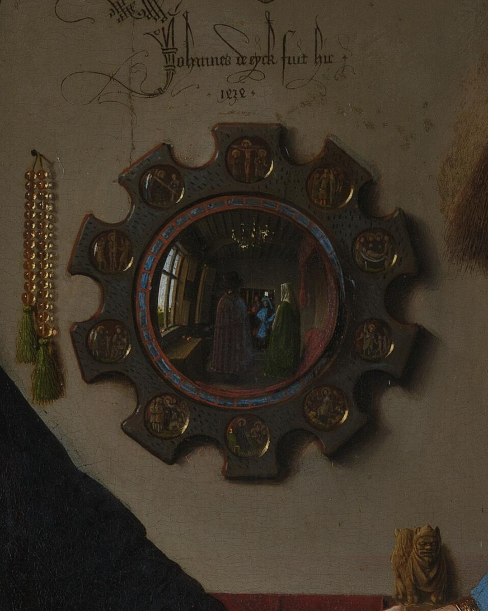
Two of them. Look in the mirror.
Swipe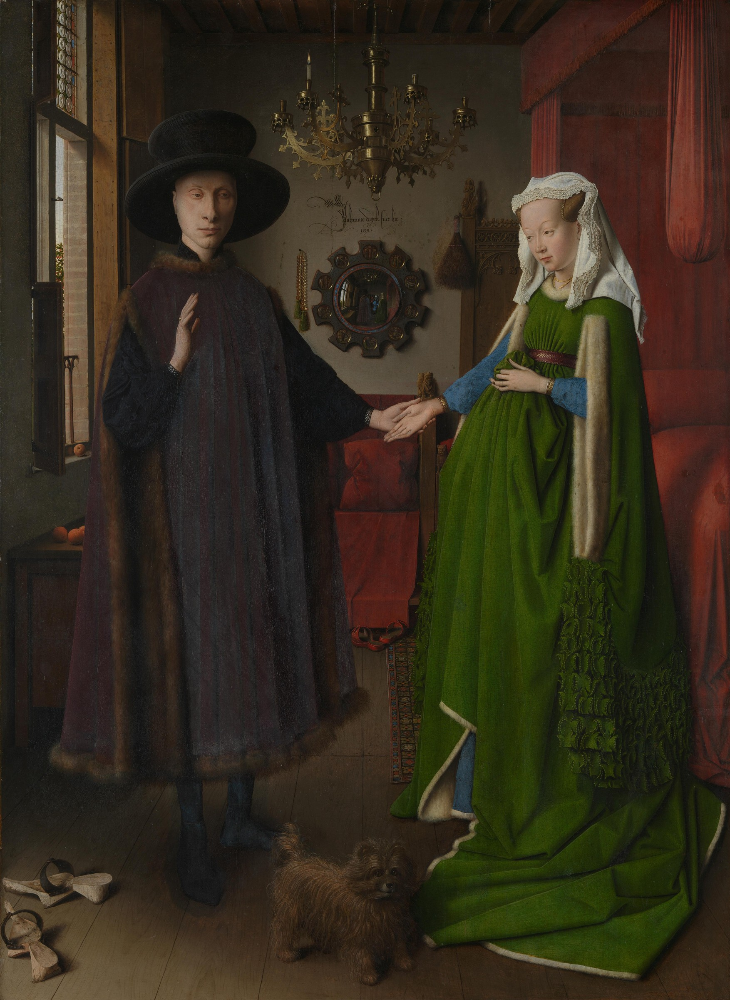
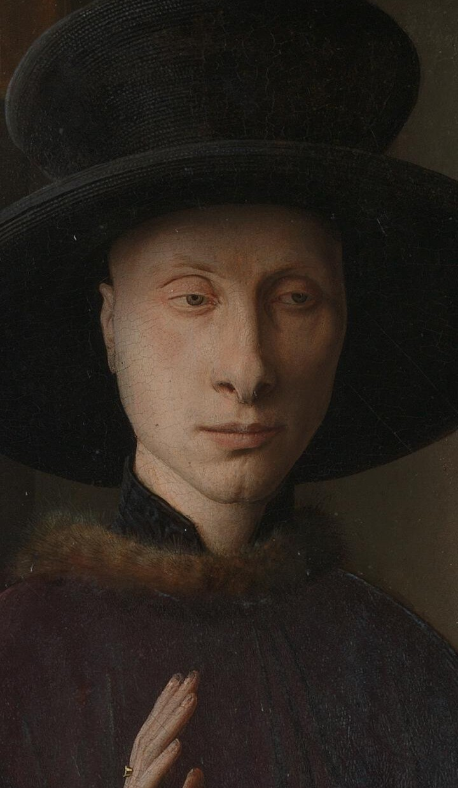
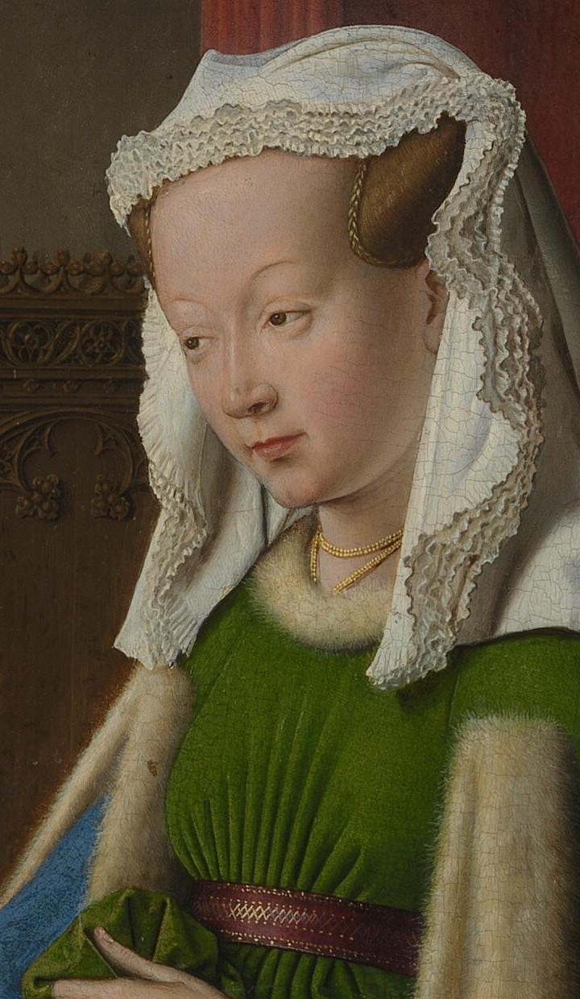
He's probably Giovanni Arnolfini, an Italian trader in Bruges. Her name? Lost. And it's not a wedding scene, whatever you were told.
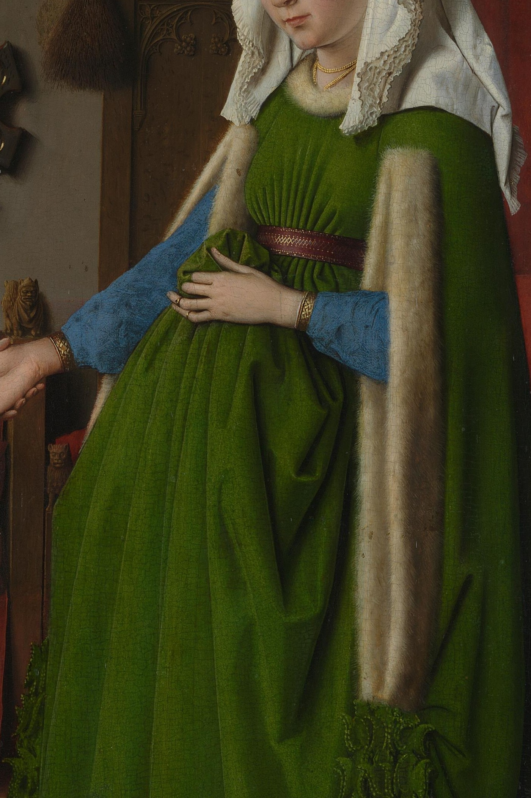
Wool, fur, metres of greenThe National Gallery says so plainly. She's hoisting a heavy, fashionable gown, the way rich women did. Painters dressed virgin saints the same way.
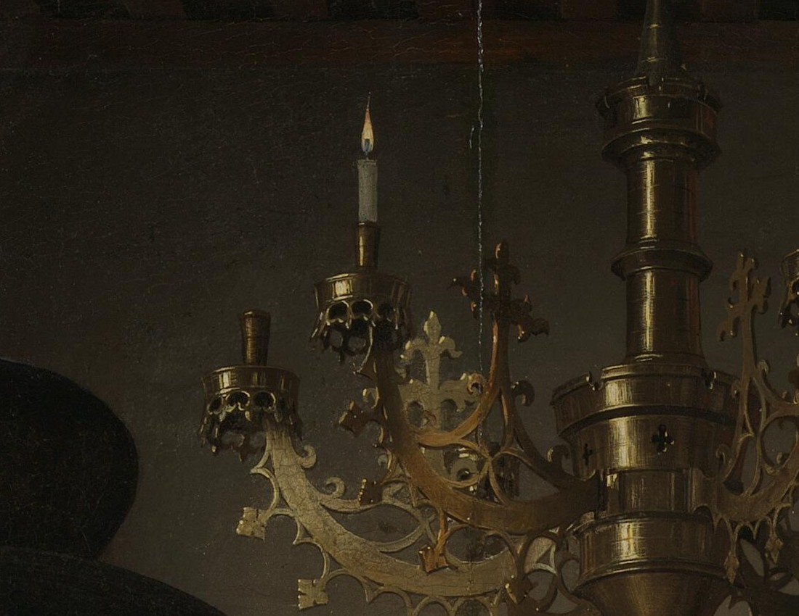
Only one flame burns, on his side. Historian Margaret Koster reads it as a memorial. His first wife, Costanza, had died by 1433.
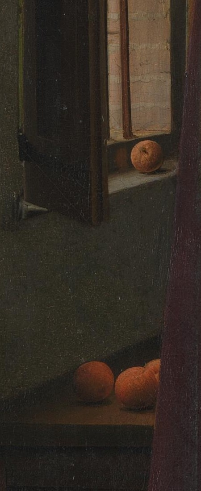
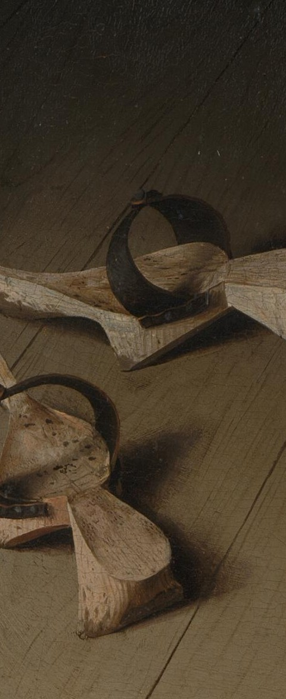
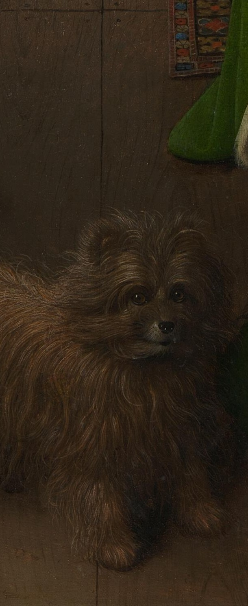
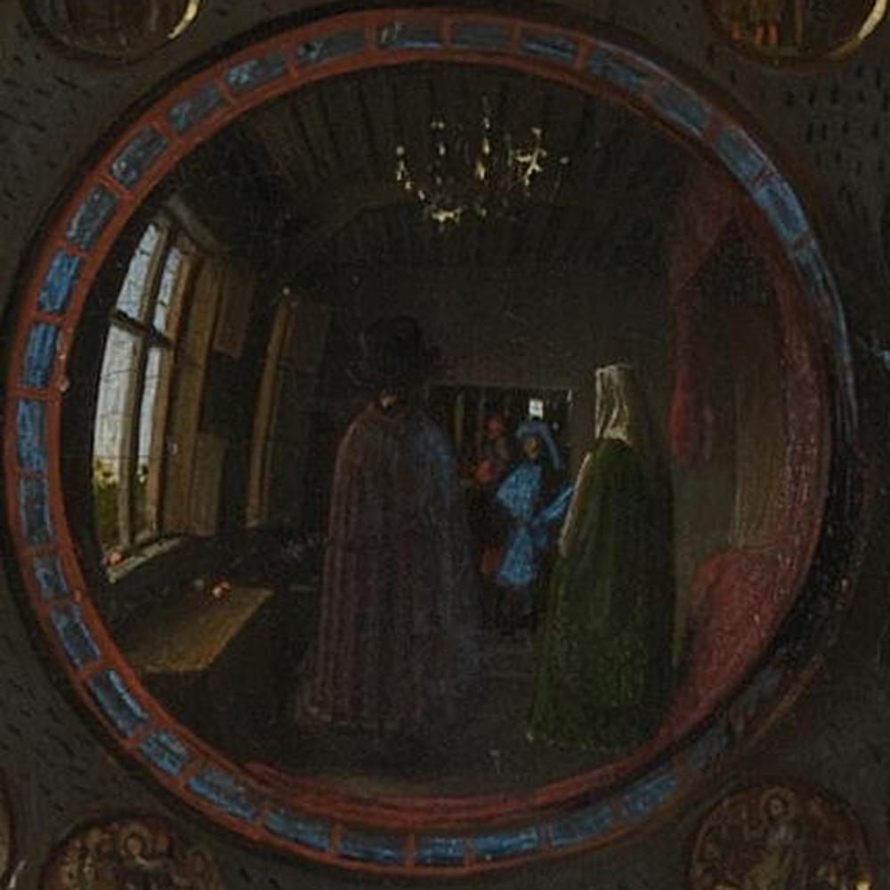
The couple, from behind. Then two men walking in, one in blue, one in red. The frame holds ten tiny scenes of Christ's Passion.
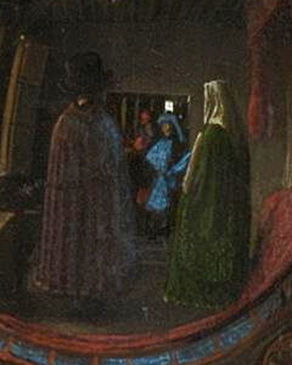
The mirror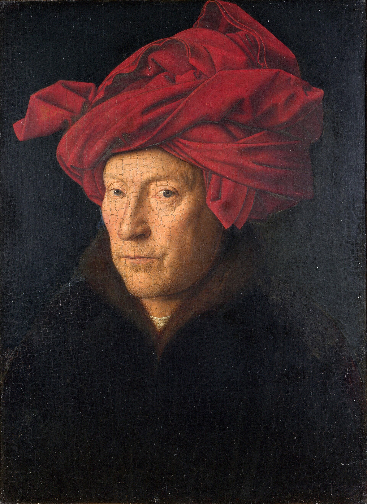
Self-portrait? 1433Not “made this.” Was here. If the man in red is him, he stood in the doorway. Exactly where you're standing now.
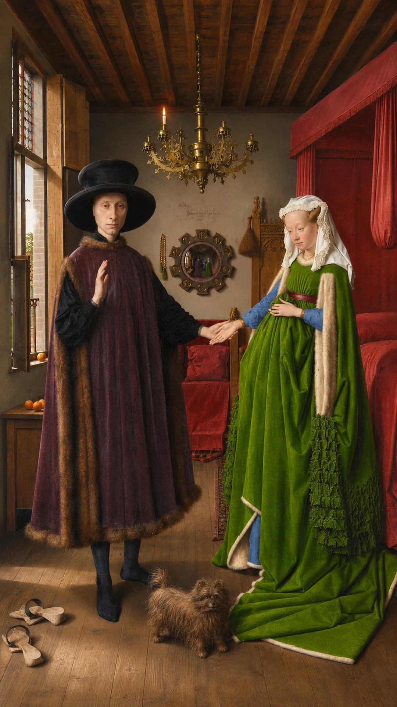
Walk past the dog, into the mirror. Watch the film on our page.